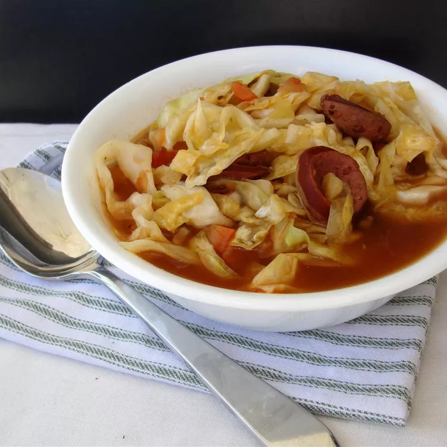

Cabbage Soup
Home

I love this overnight Cabage Soup recipe! It's easy to make-ahead for a quick, on-the-go breakfast. You can add-in your favorite toppings, fruit, or nuts.
Ingridients
- ⅔ cup warm water
- ⅔ cup warm milk
- 2 teaspoons active dry yeast
- 2 tablespoons white sugar
- 1 large egg, beaten
- 6 tablespoons unsalted butter, melted
- 4 cups all-purpose flour, or more as needed
- 1 ½ teaspoons fine salt
Steps
- Combine warm water and milk in a mixing bowl and sprinkle yeast over.
- Add sugar, egg, and melted butter for dough to the yeast mixture.
- While dough is rising, preheat the oven to 375 degrees F (190 degrees C).
- Remove from the oven onto a wire rack and let cool for 5 minutes.